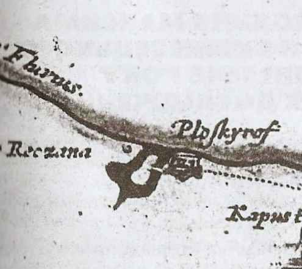

У Хмельницькому понад 1000 різних вулиць та провулків, площ та майданів, але 200 років тому все було інакше. В місті їх було всього 9. Завдяки вигідному розташуванню на перетині двох торговельних та поштових шляхів, які вели на Летичів та Кам'янець-Подільський, місто отримало чималу користь від торгівлі та промисловості, яка була реалізована лише у XIX столітті. Впродовж століть Плоскирів, а згодом Проскурів, як його тоді називали, можна було вважати пересічним містечком, яких було сотні по всій Україні, та чому саме він став центром області? Своєму розвитку місто завдячує, звичайно, містянам.
Проскурів віддавна був багатонаціональним містом. На початку XX століття майже половину його населення складали євреї, було тут також чимало українців, поляків та росіян. Православне населення становило третину міської громади.
Історичні факти про місто
Перші поселення на території міста з'являються в бронзовому віці у II тис. до н.е. Майже через тисячу років тут оселяються люди доби залізного віку і, нарешті, скіфи та черняхівці. Але саме місто було засновано майже тисячу років пізніше.
Перша відома на сьогодні згадка про поселення, яке стало основою сучасного Хмельницького, з'явилась у 1431 році, саме від цієї дати і ведуть нині історію міста. В привілеї польського короля Ягайла шляхтичу Яну Чанстуловському, є згадка про невеличке село Плоскирівці, що знаходиться в місці злиття річки Плоскої та Південного Бугу.
Інформацію про міські укріплення ми маємо із карти Гійома де Боплана. Особливої інформації про них немає, на пізніших картах 1806, 1824 років є лише зображення залишків валів. Відомо лище що вже на початок ХІХ століття від замку майже не лишилось сліду.

Протягом наступних трьохсот із половиною років місто перебувало під владою Польського Королівства, Речі Посполитої, Української держави Богдана Хмельницького, Османської імперії, у 1699 році знову повернулось Короні Польській, а в 1793 році за другим поділом Речі Посполитої Проскурів переходить до Російської імперії.